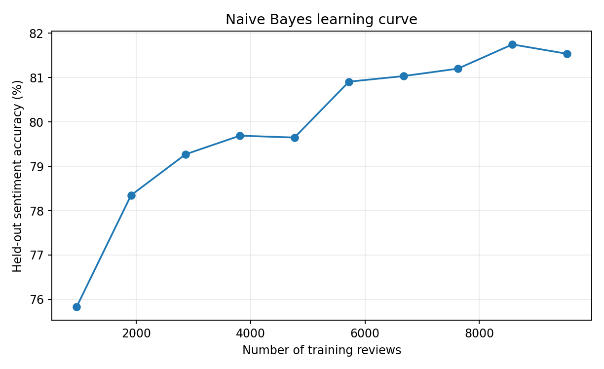
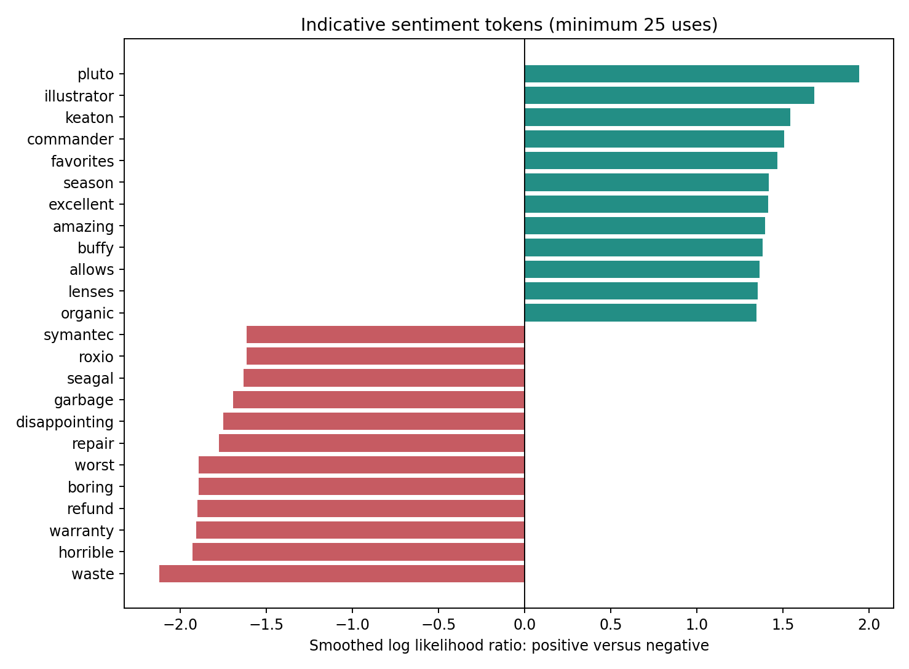

Text Classification with Naive Bayes
Implementing a multinomial Naive Bayes sentiment classifier from scratch and investigating how features, training data, and review domains affect performance.
Part 1 — Method and implementation
The dataset contains 11,914 tokenized customer reviews from six product domains (books, camera, DVD, health, music and software). Each record contains a domain label, a positive/negative sentiment label, a document identifier and the review tokens. Only the review text and sentiment are used for the required classification task; domain labels are retained for optional experiments.
| Data split | Reviews |
|---|---|
| Training (first 80%) | 9,531 |
| Evaluation (last 20%) | 2,383 |
| Training vocabulary | 52,392 distinct tokens |
Training the classifier
For each sentiment label, I count documents and word occurrences to estimate a class prior and conditional word probabilities. I use add-one (Laplace) smoothing so words absent from one class still receive nonzero probability.
P(w | c) = (count(w, c) + 1) / (total tokens in c + |V|)
Scoring a new review
The classifier uses the multinomial bag-of-words assumption and accumulates log probabilities, avoiding numerical underflow from multiplying many small values. Tokens never observed in training are ignored when classifying unseen reviews.
predicted sentiment = argmaxc ∈ {pos, neg} score(d, c)
The functions train_nb(), score_doc_label(), classify_nb() and classify_documents() implement this method directly with Python word counts. No scikit-learn Naive Bayes estimator is used.
Sanity checks. The word great receives a higher joint score for positive sentiment, while bad favors negative sentiment. Scoring an example containing an unseen word, such as ['a', 'top-quality', 'performance'], does not crash.
Part 2 — Sentiment classification results
The model predicts review sentiment on the 20% evaluation portion, which was not used to estimate model parameters.
The classifier correctly labels 1,943 reviews and misclassifies 440. Performance is substantially above a 50% balanced-class guessing benchmark, showing that word occurrence statistics capture useful sentiment signals despite their simplicity.
Part 3 — Error analysis
I inspected reviews whose predicted label differs from the true sentiment. The examples below are from the held-out evaluation set; the excerpts show only the beginning of each review, not necessarily the words responsible for the entire prediction.
| Example | Actual | Predicted | Review excerpt |
|---|---|---|---|
| 1 | neg | pos | “we bought this camera thinking that it would be our do-all " eurocam " for an upcoming trip to europe . it promised a sufficient range of performance and features to easily meet our nee…” |
| 2 | neg | pos | “i grew up reading harold evan 's sunday times - in the late 1970s it provided a window on the world that few other papers could . i particularly remember comprehensive coverage of egypt…” |
| 3 | pos | neg | “i 've been using norton antivirus 2002 with annual updates of patches forever with norton internet security 2003. now that it 's time to renewal norton antivirus , i thought i switch to…” |
Some negative reviews open with praise before describing disappointment, and some positive reviews contain negative comparisons with competing products. These mixed signals can mislead a bag-of-words classifier because it counts words without modeling the scope of negation, ordering of arguments or which product a statement refers to. Long reviews may also contain many sentiment-bearing words that overwhelm the overall judgment. The examples were selected by absolute log-score margin, which can grow with review length, so a large margin does not by itself imply a calibrated probability of being wrong.
Part 4 — Optional experiments
4.1 Six-category topic classification
The same Naive Bayes training and prediction functions can classify the topic instead of the sentiment. Here the six possible labels are books, camera, DVD, health, music and software.
Topic-specific vocabulary provides a strong signal: words about lenses, books, films, or computer programs can help identify a review's domain. This result is not directly comparable with the binary sentiment accuracy because the targets and chance-level baselines differ.
4.2 Learning curve
The evaluation set is held fixed while training uses increasing fractions of the original 80% training portion. Accuracy generally rises as additional labeled reviews are included, with smaller improvements near the end.

View learning-curve values
| Training fraction | Reviews used | Accuracy |
|---|---|---|
| 10% | 953 | 75.83% |
| 20% | 1,906 | 78.35% |
| 30% | 2,859 | 79.27% |
| 40% | 3,812 | 79.69% |
| 50% | 4,765 | 79.65% |
| 60% | 5,718 | 80.91% |
| 70% | 6,671 | 81.03% |
| 80% | 7,624 | 81.20% |
| 90% | 8,577 | 81.75% |
| 100% | 9,531 | 81.54% |
4.3 Most informative words
To inspect which words favor each class, tokens are ranked by a smoothed positive-versus-negative log-likelihood ratio. The visualization omits very rare words (fewer than 25 total appearances) to reduce noisy rankings. Larger positive values favor positive sentiment; larger negative values favor negative sentiment.

Words such as waste, horrible, excellent, and amazing are intuitive sentiment indicators. However, names or topic-related terms such as pluto, keaton, and commander also appear in the rankings. These are correlations learned from this dataset, not words with universally positive sentiment. A word quoted or used in a comparison can also be misleading when its surrounding context is ignored.
4.4 Gaussian Naive Bayes for numerical data
I extended the probabilistic approach to the Iris dataset using Gaussian likelihoods instead of discrete word frequencies. For each class and numerical feature, the training function estimates a mean and maximum-likelihood variance; class scores use Gaussian log densities. The numerical classifier is implemented from scratch.
A seeded random permutation selects 110 flowers for training and 40 for testing. Scikit-learn is used to load Iris, not to train the Gaussian Naive Bayes classifier.
4.5 Alternative classifiers using scikit-learn
For this explicitly optional comparison, the same review training/evaluation split was used with TF-IDF features and two library-based classifiers.
| Classifier | Evaluation accuracy |
|---|---|
| From-scratch Naive Bayes (unigrams) | 81.54% |
| TF-IDF + LinearSVC | 85.35% |
| TF-IDF + selected features + MLP | 82.84% |
LinearSVC outperforms the original unigram Naive Bayes baseline in this experiment. The MLP also improves on the baseline, but its score is lower than LinearSVC's. MLP performance may vary slightly between runs because of random initialization. These models have different representations and training procedures, so the comparison is empirical rather than a controlled comparison of algorithms alone.
4.6 Improving features with negation and bigrams
I tested plain unigrams, negation-marked words, adjacent-word bigrams, and a combination of both. All four configurations use the same from-scratch Naive Bayes implementation and the same held-out evaluation set.
| Feature set | Test accuracy |
|---|---|
| Unigrams (baseline) | 81.54% |
| Negation markers | 80.53% |
| Unigrams + bigrams | 85.56% |
| Bigrams + negation | 85.90% |
Adjacent-word bigrams capture local expressions that isolated words miss. Negation markers by themselves did not improve performance here, but combining them with bigrams produced the best tested accuracy. In a paired comparison, the combined model corrected 179 examples missed by the baseline, while the baseline alone was correct on 75 examples. An exact McNemar test yielded p ≈ 5.57 × 10⁻¹¹, suggesting the prediction differences are not simply symmetric random disagreements.
Evaluation caveat. The same evaluation set was used to explore multiple feature variants. The reported best accuracy is descriptive; an entirely separate final test set would be needed for an unbiased estimate after selecting features.
4.7 Domain sensitivity
Separate sentiment models were trained on books and camera reviews. Each was evaluated both on its own domain and on the other domain, using the original training/evaluation partition.
| Training domain | Books test | Camera test |
|---|---|---|
| Books | 79.84% | 64.84% |
| Camera | 70.03% | 88.28% |
A camera-trained classifier falls from 88.28% on camera reviews to 70.03% on books reviews. Similarly, books-to-camera transfer performs notably worse than books-to-books classification. This indicates that sentiment language and token frequencies are domain-dependent.
Conclusion
The from-scratch multinomial Naive Bayes classifier achieved 81.54% sentiment accuracy. It is simple, interpretable and effective, but has difficulty with context, mixed judgments, and negation. Adding bigrams and negation markers improved accuracy to 85.90%. The optional topic, Gaussian, alternative-model and cross-domain experiments show how the same probabilistic approach generalizes to different tasks, while also revealing the limits of a simple bag-of-words model.
Source code and reproducibility
The submission uses one shared multinomial Naive Bayes implementation across sentiment classification, topic prediction, learning curves, feature engineering, and domain comparisons. Gaussian Naive Bayes has separate likelihood functions because numerical inputs require a different distribution. Scikit-learn estimators are used only in the explicitly optional alternative-classifier experiment.
python syde572_assignment4.py
Run the Python script from its directory, with all_sentiment_shuffled.txt beside it. The script generates the results JSON and two plots; the site displays copies in 4/media/. The figures and linked result files should be regenerated after any further script changes so all published measurements agree.
View the source code
Open or download the complete Python script. The page links to the source directly to avoid duplicating a long program inside the HTML document.